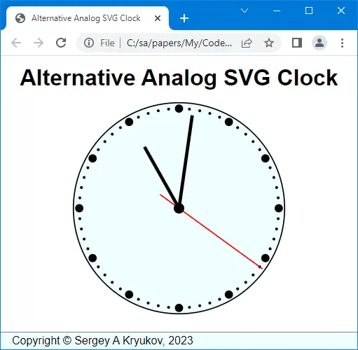

The application has no server side and is based on HTML + SVG + CSS + JavaScript only

Contents
Introduction
What's so Interesting?
Implementation
SVG
Clock
Comparison of Object Types
Arrow Rotation
Performance Optimization
Main Difference Between Analog and Digital Clocks
How to Add Decorations?
CSS: Docking Layout
CSS: Fitting SVG
What About Server Part?
Introduction
What’s so Interesting?
What’s so Interesting? Virtually nothing! This is the application alternative to the one shown in the article An SVG Analog Clock. I was surprised by the fact of how a clock could be over-engineered and decided to provide a lean and near-optimal solution which I think is way more adequate.
An on-screen clock has near-zero practical value, maybe even negative. This is just a traditional programming exercise, on par with editors, Tetris implementations, fractal image rendering, and the like.
However, this article explains several subtle points that could be useful for beginners.
Implementation
SVG
First, let’s see how SVG can be built dynamically. Everything is implemented as the class SVG:
class SVG {
#implementation = {};
constructor(viewBox, existingSvg) {
const ns = "http://www.w3.org/2000/svg";
this.#implementation.createNS = (name) =>
document.createElementNS(ns, name);
this.#implementation.attribute = (element, values) => {
for (let attribute in values)
element.setAttribute(attribute, values[attribute]);
return element;
};
this.#implementation.svg = existingSvg == null ?
this.#implementation.createNS("svg") : existingSvg;
if (viewBox != null)
this.#implementation.svg.setAttribute("viewBox",
`${viewBox.x.from} ${viewBox.y.from}
${viewBox.x.to - viewBox.x.from}
${viewBox.y.to - viewBox.y.from}`);
}
get element() { return this.#implementation.svg; }
appendElement(element, group) {
if (group)
group.appendChild(element);
else
this.#implementation.svg.appendChild(element);
return element;
}
group() { return this.appendElement(this.#implementation.createNS("g")); }
}
First, note that all the private code is hidden in the constructor and the private member this.#implementation.
An SVG element can be created using the document object in a bit different way than HTML elements because SVG uses a different namespace. This is implemented in a local method this.#implementation.createNS.
The class SVG can be used in two different ways. If existingSvg is specified, the class can be used to populate an existing <svg> element, and new content can be added to existing content. It can be used to add content to an <svg> element embedded in HTML.
Clock
The function createClock creates an instance of the clock. It can also be created in two different ways. If the parameter parent is of the class SVG (described above), the clock can be rendered on top of some existing <svg> element. Otherwise, it is created from scratch. As the instance of SVG.element is appended to some existing HTML element, the entire clock created from scratch will be appended to it. The function returns the function set used to set and render the current clock time.
For the rendering of the clock face and arrows, Z-order is important. If an SVG element is created later, it is placed in the foreground. For example, the red second arrow should be created at the very end, to make it well visible in all locations.
To choose the way to use, the code needs to compare objects by type. Let’s look at this.
In the application, the clock instance is initialized and used in “main.js”, in the handler of window.onload. The clock is set once at initialization and then periodically in the function passed to setInterval().
Comparison of Object Types
In the function createClock, we have:
if (parent.constructor != SVG)
parent.appendChild(svg.element);
Naturally, at this point, we assume that the object parent is not undefined and not null. When needed, it can be checked up with if (parent != null), as this comparison also covers the case of undefined.
This is the way to compare types directly, not using magic strings. We can find many examples of JavaScript code where the types are compared using type names. This is dirty, less maintainable, and should be avoided.
Arrow Rotation
The central part of the clock is the method set. It rotates the arrows:
createClock = parent => {
let currentTime = null;
const set = time => {
if (currentTime == time) return;
currentTime = time;
const date = new Date(time);
let hour = date.getHours() % 12;
let minute = date.getMinutes();
let second = date.getSeconds();
hour = (hour + minute / 60 + second / 3600) / 12;
minute = (minute + second / 60) / 60;
second = second / 60;
arrowHour.style.transform = `rotate(${hour}turn)`;
arrowMinute.style.transform = `rotate(${minute}turn)`;
arrowSecond.style.transform = `rotate(${second}turn)`;
};
return set;
};
Here, arrowHour, arrowMinute, arrowSecond are SVG groups. Why? It is done to generalize the code and make it maintainable in case one needs to render some complicated arrow shapes composed of several SVG elements.
The other role of style.transform is to avoid trigonometric calculations and make the code more maintainable. Note that the transform assumes that the coordinate point (0, 0) is the center of rotation.
In our case, the clock state is updated every second. However, if we call the clock’s function set from the handler passed to setInterval every second, the system cloak events will be beating with this cycle, so part of the second clock updates will be lost. Therefore, to see all second updates, set should be called a few times per second. In the code, it is done approximately three times per second on average, and it looks good. But then some updates of the graphics will be redundant.
This problem can be resolved by storing currentTime locally and checking that the argument time passed to set has a new value, as it is shown in the set code:
if (currentTime == time) return;
currentTime = time;
It works because the value for the argument time is obtained as Date.now(). The return value type is integer, and this operation is very fast because it is based on the kernel OS functionality, and the comparison is also very fast. On the other hand, the rest of the set function has expensive string operations and even more expensive graphical updates. Therefore, avoiding redundant updates of the clock states is important.
Main Difference Between Analog and Digital Clocks
The first idea of the calculation of the arrow angles would be using just hours, minutes, and seconds. This is what a digital clock does. These values are integers. And yes, it would be suitable for a digital clock.
An analog clock is different. It would be incorrect to say that an hour arrow shows just hours. A single hour arrow should show seconds, minutes, and hours. Likewise, a minute arrow should show both minutes and seconds. Only the accuracy is different.
This is wrong:
createClock = parent => {
const set = time => {
if (currentTime == time) return;
currentTime = time;
const date = new Date(time);
let hour = date.getHours() % 12;
let minute = date.getMinutes();
let second = date.getSeconds();
hour = hour / 12;
minute = minute / 60;
second = second / 60;
arrowHour.style.transform = `rotate(${hour}turn)`;
arrowMinute.style.transform = `rotate(${minute}turn)`;
arrowSecond.style.transform = `rotate(${second}turn)`;
};
return set;
};
If this calculation was the same as for a digital clock, the minute arrow would stay at some minute label and jump to a new position every minute. And the hour arrow would jump by an hour every hour. Instead, all the arrows should move by seconds. This is done by the correct calculation shown above.
How to Add Decorations?
The demo application is very simple. How to add all those Arabic or Roman numeric labels, fancy arrows, or fancy backgrounds?
The way to go would be using an existing <svg> element embedded in HTML. The SVG elements to be controlled by the script could be added on top of it. When I need to do such a thing, I draw appropriate vector graphics with some vector graphic editor and save it as an SVG file. I would recommend Inkscape. The file can be embedded into HTML. Usually, the file should be cleaned of comments, redundant metadata, and unused id attributes. Numeric colors should better be replaced with CSS color names.
Typically, adding some vector graphics to existing SVG requires some group. The reference to it can be obtained via its id attribute or some other way using Document.querySelector().
Here, most important thing is to match the coordinate system and a viewport.
CSS: Docking Layout
Note that the application behaves pretty much like a “desktop application”: when a browser window is resized, the <header> and <footer> elements always stay on top and at bottom of the browser client area. The central <main> area, where SVG is rendered, is scaled appropriately. At least, it happens if the brower window is not too small.
This is the behavior most adequate for a single-page application, but not only for this purpose.
This is achieved using the CSS Flexbox layout method.
The application of flex has many subtle points. In the application, the relevant part of CSS is commented on to show the right technique:
html, body { height: 100%; }
body { display: flex; flex-flow: column; }
main { flex: auto; overflow: auto; }
CSS: Fitting SVG
Another tricky part of the application CSS is fitting the SVG part in its container and its centering. It is used by using relative units:
section { text-align: center; }
svg { height: 80vmin; width: 80vmin; }
This way, the actual size of the vector graphics part is defined by either width or height of the client size of the browser window, depending on the current aspect ratio.
In this case, the image ratio is 1:1. If it is not so, one of the width or height attribute values can be auto. In some cases, the attribute max-content or min-content can be used.
What About Server Part?
The question is: why? Maybe this question could be addressed to the author of the original article who presented a much bigger 2-tier application. I think the Web application using some server part is one thing, and a clock component is a totally different thing and should be considered separately.
At best, the application can request the server part to change the time zone, or perhaps some reference point to count time from. It can be easily achieved with Ajax. Even in this case, separation of concerns should be used.